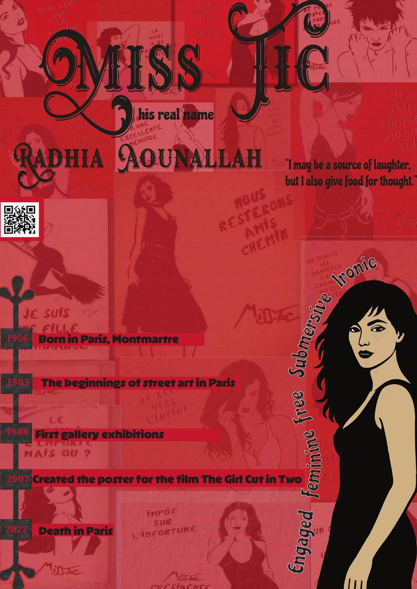

Miss Tic — Biographie visuelle
Affiche typographique et infographique retraçant la vie de Radhia Aounallah, artiste de street art parisienne (1956–2022).

Cliquer sur l'affiche pour l'agrandirDémarche
Composition mêlant chronologie, portrait illustré et citations, dans une palette rouge intense évoquant l'univers street art de l'artiste.
Compétences mobilisées
TypographieIllustratorInfographieStreet Art